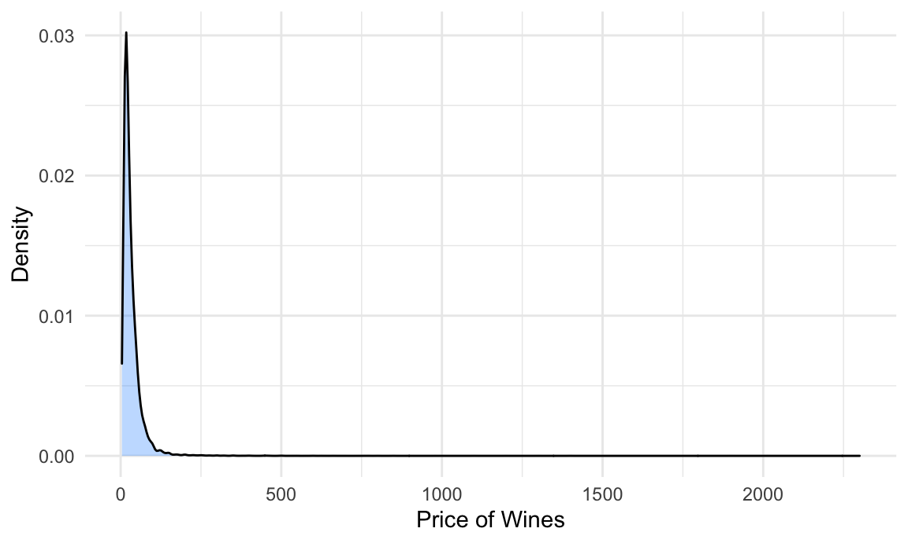

Statistical Analysis
Hypothesis
In this analysis, we are interested in whether wine would be more expensive if its points (X1) (rated by Wine Enthusiast) increases, adjusting for categorical variables variety (X2) and continent of production (X3).
Distribution of Outcomes : Wine Prices over the World

We detect a highly skewed pattern of the price distribution, thus our response variable ‘Price’ needs to be log transformed before fitting into the regression model. After log transformation, the distribution becomes much more normal.

Modeling
Here, we try to fit a final model in the following form:
\[ log(Price) = \beta_1 + \beta_2X_{Points} + \beta_3X_{Variety} + \beta_4X_{Continent}\]
Price: The cost for a bottle of the wine.
Points: The number of points Wine Enthusiast rated the wine on a scale of 1-100.
Variety: The top four types of grapes used to make the wine (i.e. Chardonnay, Pinot Noir, Cabernet Sauvignon, Red Blend).
Continent: The continent that the wine is produced from.
Since log(Price) and Points are numerical variables, we only need to worry about Variety, which includes 632 unique levels. To simplify our model, we choose to select the most representative four varieties: Chardonnay, Pinot Noir, Cabernet Sauvignon, Red Blend. Here, we define representative as having more than ten thousands counts of wines for the particular variety.
Interaction: Points and Variety
After log-transforming of independent variable Price, we observe a linear trend in Log_Price vs. Points. This implies a positive correlation between price and log_points. The trend lines for the 4 most frequent varieties are very close together. So there is a similar positive correlation between price and points for each variety. We also observe that lines of Cabernet Sauvignon and Chardonnay cross with each other, so let’s take a look at p-value of each term of in ‘log_price ~ points * variety’:
| term | estimate | p.value |
|---|---|---|
| (Intercept) | -8.2792558 | 0.0000000 |
| points | 0.1310157 | 0.0000000 |
| varietyPinot Noir | 2.8857093 | 0.0000000 |
| varietyCabernet Sauvignon | 0.0542255 | 0.7309678 |
| varietyRed Blend | 1.2574494 | 0.0000000 |
| points:varietyPinot Noir | -0.0293591 | 0.0000000 |
| points:varietyCabernet Sauvignon | 0.0016767 | 0.3497581 |
| points:varietyRed Blend | -0.0131835 | 0.0000000 |
Since two interaction terms Points * Pinot Noir and Points * Red Blend are significant at alpha = 0.05, we further check the change of determination coefficient before and after adding the interaction term to decide whether to include it in our final model:
| x |
|---|
| 0.429 |
| x |
|---|
| 0.433 |
Coefficient of determination (\(R^2\)) equals to 0.429 without interaction term suggests a moderate association between points, variety and log(price). Although there is a significant p-value of Points - Variety interactions, the coefficient of determination does not change much (0.429 to 0.433) when interaction term is added. Therefore, we consider the interaction as not significant, which means that the relationship between points and price does not vary by different variety. So we delete the interaction term Points * Variety from model.
Complete Model: Log_Price vs. Points + Variety + Continent
Qustion: Is variable Continent significant enough to be added?
| res.df | rss | df | sumsq | statistic | p.value |
|---|---|---|---|---|---|
| 49478 | 12565.96 | NA | NA | NA | NA |
| 49473 | 11632.08 | 5 | 933.875 | 794.382 | 0 |
Yes. By doing an ANOVA test, we find that p-value equals to zero, which tells us that the larger model Log_Price ~ Points + Variety + Continent is superior over Log_Price ~ Points + Variety, which means continent is a significant variable. Therefore, we add continent into our model and get the following estimates:
| term | estimate | p.value |
|---|---|---|
| (Intercept) | -6.656 | 0.000 |
| points | 0.113 | 0.000 |
| varietyPinot Noir | 0.278 | 0.000 |
| varietyCabernet Sauvignon | 0.248 | 0.000 |
| varietyRed Blend | 0.059 | 0.000 |
| continentAfrica | -0.341 | 0.000 |
| continentAsia | -0.049 | 0.064 |
| continentEurope | 0.089 | 0.000 |
| continentOceania | -0.241 | 0.000 |
| continentSouth America | -0.411 | 0.000 |
The complete model:
\[ log(Price) = -6.656 + 0.113Points + 0.278Pinot Noir +0.248Cabernet Sauvignon + 0.059Red Blend - 0.341Africa - 0.049Asia + 0.089 Europe - 0.241Oceania -0.411SouthAmerica\]
However, because interaction between Continent and Points is significant, we decide to stratify the analysis by continent for easier interpretation.
Stratified Analysis by Continent
| continent | (Intercept) | points | varietyPinot Noir | varietyCabernet Sauvignon | varietyRed Blend |
|---|---|---|---|---|---|
| North America | -4.977 | 0.093 | 0.343 | 0.403 | 0.171 |
| Oceania | -8.044 | 0.126 | 0.330 | 0.110 | 0.068 |
| Europe | -11.964 | 0.175 | 0.225 | -0.182 | -0.171 |
| Asia | -4.120 | 0.082 | -0.013 | 0.319 | 0.228 |
| South America | -6.018 | 0.101 | 0.202 | 0.016 | 0.439 |
| Africa | -8.301 | 0.128 | 0.573 | 0.122 | 0.133 |
Finding
Complete Model (Points, Variety, Continent): Based on the summary table of estimates, we see that all of our main effects are statistically significant except in Asia. This indicates that different groups in variety and continent indeed affect the price of a bottle of wine. However, in Asia, price of wine is not affected by points and variety. Since p-value of points estimate is close to zero, wine would be more expensive if its points (X1) increases, adjusting for categorical variables variety (X2) and continent of production (X3), as we proposed in the hypothesis. Since our \(R^2\) value is 0.429, which indicated that chosen variables together are able to explain 42.9% of observed variation in price. Therefore, a moderate association has been observed.
Nested Models (Points, Variety by Continent):
For all continents, since the estimates of points are positive, price increases as points increases adjusting for variable variety. It corresponds to our hypothesis that wine is more expensive as its points review increases.
In Europe only, Carbernet Sauvignon and Red Blend have negative estimates. It implies that the expected price of variety Carbernet Sauvignon and Red Blend in Europe are lower than the expected price of Chardonnay (adjusting for points). This could be resulted by high yields of specific varieties, which lower the price of wine. And we need to do more research on the yields for further analysis.
Asia has the smallest estimate of points. So the price of wine in Asia is leastly affected by its points, adjusted for variety. In explain, on average, one point increase of wine in Asia leads to 8.5% (= \(e ^ {(0.082)} 100 - 1\)) increase in expected price, which is only one-third of the increase 19.1%(= \(e ^ {(0.175)} 100 - 1\)) in Europe.
Porfound Analysis: Closer Look in North America
Non-random distribution of variances of residual tells us that bootstrapping needs to be down before fitting the model for price of wine in North America.
Bootstrap 1000 times
| term | mean_est | sd_est |
|---|---|---|
| (Intercept) | -4.980 | 0.068 |
| points | 0.093 | 0.001 |
| varietyCabernet Sauvignon | 0.402 | 0.007 |
| varietyPinot Noir | 0.343 | 0.006 |
| varietyRed Blend | 0.171 | 0.009 |
After 1000 times bootstraps, we get a almost 20 percent lower (0.006 compared to 0.007) in standard error for Pinot Noir estimate, which gives us more accurate confidence interval when predicting the price. Therefore, it is necessary to do bootstrap before we predict the price range of Pinot Noir in North America.